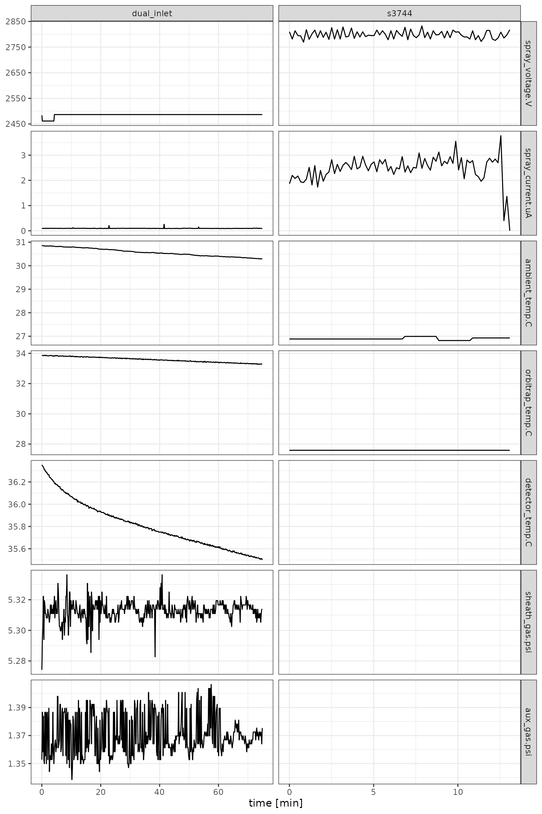
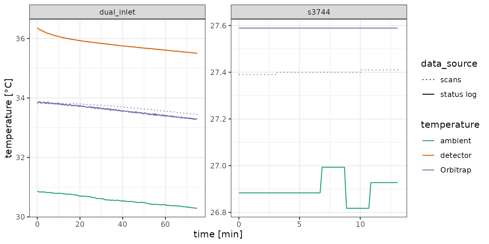

Raw files differ in which information they provide depending on the
instrument and its software version. orbi_aggregate_raw()
therefore uses an aggregator that defines which
information to pull out of the raw files, where to find it, and what
data type it should have. This vignette shows how to use the included
aggregators, how to build your own, and how to use a custom aggregator
to retrieve information from the instrument status log.
# libraries
library(isoorbi) # load isoorbi R package
library(dplyr) # for mutating data frames
library(ggplot2) # for data visualizationExample files
Here we use two example files from two different instruments (an Orbitrap Exploris 240 and a Q Exactive Focus).
# two example files from different instruments
raw_files <-
orbi_get_example_files(c("dual_inlet.raw", "s3744.RAW")) |>
orbi_read_raw()
raw_filesIncluded aggregators
orbi_get_aggregator()
orbi_aggregate_raw() uses the standard
aggregator by default. The minimal aggregator contains a
smaller set of columns to aggregate. The extended
aggregator is more elaborate, providing access to additional columns
from the raw data files.
# example: minimal vs. extended aggregator
orbi_get_aggregator("minimal")
orbi_get_aggregator("extended")
# using the extended aggregator instead of the default (standard)
raw_files |> orbi_aggregate_raw(aggregator = "extended")The printout of the aggregated data only says how many columns of
each dataset were not aggregated. To see which ones they are
(e.g. to find additional information to include in a custom aggregator),
print the aggregated data with show_all = TRUE.
agg_data <- raw_files |> orbi_aggregate_raw()
agg_data |> print(show_all = TRUE)Custom aggregators
orbi_register_aggregator()
You can build your own aggregator with
orbi_start_aggregator() and/or expand an existing one with
orbi_add_to_aggregator() and then register it via
orbi_register_aggregator() to use it by name.
my_agg <-
orbi_get_aggregator("minimal") |>
# pull out the S-Lens RF Level information from the scans and store it as a number
orbi_add_to_aggregator(
"scans",
"slens_rf",
source = "S-Lens RF Level",
cast = "as.numeric"
) |>
orbi_register_aggregator(name = "custom")
# show my aggregator
my_agg
# use it
raw_files |> orbi_aggregate_raw(aggregator = "custom")Instrument status log
Besides the scans, raw files hold the instrument’s status
log: readbacks that the instrument records independently of the
scans (typically every few seconds) such as temperatures, pressures,
voltages, and ion source settings. orbi_read_raw() returns
it as the status_log dataset.
# the raw status log of the first file (one row per log entry, one column per channel)
raw_files$status_log[[1]]# A tibble: 441 × 198
log.no StartTime `==== FAIMS Device: ====` ==== Overall Status: …¹ Status
<int> <dbl> <chr> <chr> <chr>
1 1 0.00693 "" "" Instr…
2 2 0.177 "" "" Instr…
3 3 0.347 "" "" Instr…
4 4 0.517 "" "" Instr…
5 5 0.687 "" "" Instr…
6 6 0.858 "" "" Instr…
7 7 1.03 "" "" Instr…
8 8 1.20 "" "" Instr…
9 9 1.37 "" "" Instr…
10 10 1.54 "" "" Instr…
# ℹ 431 more rows
# ℹ abbreviated name: ¹`==== Overall Status: ====`
# ℹ 193 more variables: Performance <chr>, `====== Ion Source: ======` <chr>,
# `Spray Voltage (V)` <chr>, `Spray Current (µA)` <chr>,
# `Spray Current std. dev. (µA)` <chr>,
# `Ion Transfer Tube Temperature (°C)` <chr>,
# `Sheath gas pressure (psi)` <chr>, `Aux gas pressure (psi)` <chr>, …
Which channels a status log contains depends entirely on the
instrument, so none of the included aggregators take anything from it.
Instead, orbi_aggregate_raw() reports all of the status log
channels as not aggregated (see
print(agg_data, show_all = TRUE) above) so you can pick the
ones you are interested in.
Status log aggregator
The status log stores all channel values as text (exactly as the
instrument reports them), so the aggregator needs to cast
the channels you want to use to numbers. Because different instruments
can call the same channel by different names, you can provide the
alternative names as the source and the aggregator uses
whichever one exists in each file. Channels that a file does not have at
all are left empty (NA) for that file.
status_agg <-
orbi_get_aggregator("standard") |>
# when each status log entry was recorded
orbi_add_to_aggregator(
"status_log",
"time.min",
source = "StartTime",
cast = "as.numeric"
) |>
# ion source
orbi_add_to_aggregator(
"status_log",
"spray_voltage.V",
source = "Spray Voltage (V)",
cast = "as.numeric"
) |>
orbi_add_to_aggregator(
"status_log",
"spray_current.uA",
source = "Spray Current (µA)",
cast = "as.numeric"
) |>
# temperatures (some channels have different names on the two instruments)
orbi_add_to_aggregator(
"status_log",
"ambient_temp.C",
source = c("Ambient temp. (°C)", "Ambient Temperature (°C)"),
cast = "as.numeric"
) |>
orbi_add_to_aggregator(
"status_log",
"orbitrap_temp.C",
source = c("Orbitrap block temp. (°C)", "Analyzer Temperature (°C)"),
cast = "as.numeric"
) |>
orbi_add_to_aggregator(
"status_log",
"detector_temp.C",
source = "Detector temp. (°C)",
cast = "as.numeric"
) |>
# gas pressures
orbi_add_to_aggregator(
"status_log",
"sheath_gas.psi",
source = "SB: Sheath gas pres. (psi)",
cast = "as.numeric"
) |>
orbi_add_to_aggregator(
"status_log",
"aux_gas.psi",
source = "SB: Aux. gas pres. (psi)",
cast = "as.numeric"
) |>
orbi_register_aggregator("standard with status log")
# show summary
status_agg
# aggregate with the status log aggregator
status_agg_data <- raw_files |>
orbi_aggregate_raw(aggregator = "standard with status log")Visualizing the status log
Status log data is a great way to check on the instrument conditions during an analysis, for example to see whether the ion source and the temperatures were stable.
# retrieve the status log channels
status_log <- status_agg_data |>
orbi_get_data(file_info = "filename", status_log = everything())
status_log# A tibble: 520 × 10
uidx filename time.min spray_voltage.V spray_current.uA ambient_temp.C
<int> <chr> <dbl> <dbl> <dbl> <dbl>
1 1 dual_inlet 0.00693 2484. 0.0906 30.9
2 1 dual_inlet 0.177 2461. 0.0937 30.9
3 1 dual_inlet 0.347 2461. 0.0937 30.9
4 1 dual_inlet 0.517 2461. 0.0999 30.8
5 1 dual_inlet 0.687 2461. 0.0906 30.8
6 1 dual_inlet 0.858 2461. 0.0968 30.8
7 1 dual_inlet 1.03 2461. 0.0968 30.8
8 1 dual_inlet 1.20 2461. 0.0999 30.8
9 1 dual_inlet 1.37 2461. 0.0906 30.8
10 1 dual_inlet 1.54 2461. 0.0968 30.8
# ℹ 510 more rows
# ℹ 4 more variables: orbitrap_temp.C <dbl>, detector_temp.C <dbl>,
# sheath_gas.psi <dbl>, aux_gas.psi <dbl>
# bring the channels into long format for plotting them in panels
status_log |>
tidyr::pivot_longer(
cols = -c("uidx", "filename", "time.min"),
names_to = "channel"
) |>
# channels in the order they were defined in the aggregator
mutate(channel = factor(channel, levels = unique(channel))) |>
# filter out channels a file does not have
filter(!is.na(value)) |>
ggplot() +
aes(x = time.min, y = value) +
geom_line() +
facet_grid(channel ~ filename, scales = "free") +
labs(x = "time [min]", y = NULL) +
theme_bw()
Ion source settings, temperatures, and gas pressures recorded in the status logs of the two files.
Comparison with the scans
The scans also record the temperature of the Orbitrap analyzer
(analyzerTemperature, aggregated by the
standard aggregator), so we can compare it with the
temperatures in the status log: the ambient temperature, the Orbitrap
block (analyzer) temperature, and the detector temperature. Note that
the analyzer temperature in the scans is not identical to the Orbitrap
temperature in the status log: it is not as precise and differs from the
status log readback by up to ~0.2 °C in these files. In the longer run
below (dual_inlet), it behaves like a strongly smoothed
version of the status log’s Orbitrap block temperature that lags behind
its changes. The differences stem likely from temperature data recorded
with different sensors/circuit boards.
# temperatures from the status log
temps <- status_agg_data |>
orbi_get_data(
file_info = "filename",
status_log = c(
"time.min",
"ambient" = "ambient_temp.C",
"Orbitrap" = "orbitrap_temp.C",
"detector" = "detector_temp.C"
)
) |>
tidyr::pivot_longer(
cols = c("ambient", "Orbitrap", "detector"),
names_to = "temperature",
values_to = "temperature.C"
) |>
mutate(data_source = "status log") |>
# the analyzer (Orbitrap) temperature from the scans
bind_rows(
status_agg_data |>
orbi_get_data(
file_info = "filename",
scans = c("time.min", "temperature.C" = "analyzerTemperature")
) |>
mutate(temperature = "Orbitrap", data_source = "scans")
) |>
# temperatures a file does not have
filter(!is.na(temperature.C))
# compare
temps |>
ggplot() +
aes(
x = time.min,
y = temperature.C,
color = temperature,
linetype = data_source
) +
geom_line() +
facet_wrap(~filename, scales = "free") +
scale_linetype_manual(values = c(3, 1)) +
scale_color_brewer(palette = "Dark2") +
labs(x = "time [min]", y = "temperature [°C]") +
theme_bw()
Temperatures recorded in the status log and the analyzer (Orbitrap) temperature recorded in the scans.